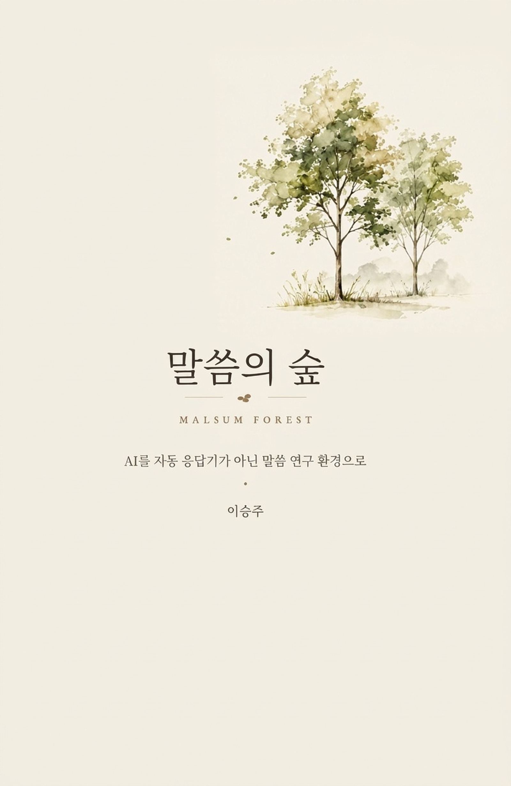

Open Pages
OPEN PAGE 07
성경연구집을 만들고 싶었다
읽기 좋고 깊이 있는 연구집을 만들고 싶은 갈망.
1. 시작은 기술이 아니었다
처음부터 무언가 거대한 것을 만들려고 했던 것은 아니었습니다. 나에게는 AI 시스템을 설계하겠다는 계획도, 새로운 도구를 세상에 내놓겠다는 야심도 없었습니다. 시작은 훨씬 작고, 훨씬 평범했습니다.
그저 성경을 더 깊이 연구하고 싶었습니다. 그리고 그 연구의 결과를 다시 펼쳐 볼 수 있는 형태로 남기고 싶었습니다. 그것이 전부였습니다.
뒤에서 이어질 여러 이야기들은 모두 이 작은 출발점을 빼고는 설명할 수 없습니다. 기술이 먼저 있었고 거기에 신앙적인 의미를 나중에 붙인 것이 아닙니다. 순서는 정확히 반대였습니다. 말씀 앞에 더 깊이 머물고 싶은 마음이 먼저 있었고, 그 마음이 길을 찾다가 비로소 기술과 만난 것입니다.
이 순서를 분명히 해두고 싶습니다. 이 책을 읽는 목회자 가운데 누군가는 "AI를 목회에 쓴다"는 말 자체에 거부감을 느낄 수 있기 때문입니다. 그 거부감은 정당합니다. AI가 먼저 있고 거기에 목회를 끼워 맞추는 방식이라면, 나 역시 같은 거부감을 느꼈을 것입니다. 하지만 이 이야기는 그런 이야기가 아닙니다. 이것은 한 목회자가 말씀을 더 오래, 더 깊이 연구하고 싶어 했던 마음의 기록입니다.
2. 읽기 좋고 깊이 있는 연구집을 향한 마음
질문은 단순했습니다.
"어떻게 하면 읽기 좋고, 깊이 있고, 만족스러운 성경연구집을 만들 수 있을까?"
이 한 문장이 모든 것의 출발이었습니다. 내가 원했던 것은 단편적인 묵상이나 간단한 요약이 아니었습니다. 본문의 구조를 살피고, 원어의 결을 따라가고, 정경 전체의 흐름 속에서 그 본문이 차지하는 자리를 보고, 신학적 의미를 정리하고, 마지막으로 그것이 오늘의 삶과 강단에 어떻게 닿는지까지 — 이 모든 것이 함께 담긴 연구를 하고 싶었습니다.
그리고 그 연구가 머릿속에만 있거나, 흩어진 파일 어딘가에 묻혀 있는 것이 아니라, 실제로 다시 꺼내어 읽을 수 있는 한 권의 책 같은 것이 되기를 바랐습니다. 연구는 깊어야 했습니다. 동시에 읽기에도 좋아야 했습니다. 목회 현장에서 다시 펼쳐 쓸 수 있어야 했고, 책처럼 묶어 보관할 수 있어야 했습니다.
많은 목회자들이 이 마음을 알 것입니다. 본문을 붙들고 며칠을 씨름한 뒤에도, 그 결과가 손에 잡히는 형태로 남지 않을 때의 허전함. 다음 주일이 오면 또 새로운 본문을 펴야 하고, 지난주에 쌓았던 연구의 깊이는 다시 기억 속에서 더듬어야 하는 반복. 한 목회자로서 나는 그 허전함을 자주 느꼈습니다. 연구는 분명 깊었는데, 그 깊이가 쌓이지 않고 매번 흩어진다는 느낌이었습니다.
그래서 나는 단순히 본문에 대한 답을 얻는 데서 멈추지 않았습니다. 성경 각 권을, 한 권씩, 연구집의 형태로 만들어가기 시작했습니다.
3. 좋은 연구는 좋은 질문의 순서에서 나온다
연구를 거듭하면서 한 가지 문제가 분명해졌습니다. 연구 방식이 매번 달랐다는 것입니다.
어떤 본문은 원어부터 파고들었고, 어떤 본문은 적용부터 떠올렸습니다. 어떤 날은 주석을 먼저 펼쳤고, 어떤 날은 묵상이 앞섰습니다. 그날의 컨디션과 그날 손에 잡힌 자료에 따라 연구의 순서와 깊이가 달라졌습니다. 좋은 날의 연구와 피곤한 날의 연구는 분명히 결이 달랐습니다.
이 흔들림이 나를 멈추게 했습니다. 깊이 있는 연구를 하고 싶다는 마음만으로는 부족했습니다. 그 마음을 지속 가능한 것으로 만들려면, 매번 같은 길을 걸을 수 있는 무언가가 필요했습니다.
그래서 내가 붙든 원칙이 있습니다.
좋은 연구는 좋은 질문의 순서에서 나온다.
무엇을 먼저 물을 것인가. 어떤 질문 다음에 어떤 질문이 와야 하는가. 이 순서가 연구의 깊이를 결정한다는 생각이었습니다. 이것은 정보를 더 많이 모으는 문제가 아니었습니다. 같은 본문을 대하더라도, 어떤 순서로 질문하느냐에 따라 도달하는 깊이가 달라진다는 것을 나는 경험으로 알게 되었습니다.
4. 경외의 길, 말씀 속으로 걸어 들어가는 길
이 원칙 위에서 시작된 것이 '경외의 길'이라는 이름의 연구 여정이었습니다.
이름에서부터 짐작할 수 있듯, 이것은 더 많은 정보를 빠르게 얻기 위한 검색 구조가 아니었습니다. 경외의 길은 한 본문을 더 깊이 경외하며 읽기 위해 만든 길이었습니다. 본문 앞에 서서, 서두르지 않고, 질문의 순서를 따라 한 걸음씩 말씀 속으로 걸어 들어가는 여정이었습니다.
이 길이 구체적으로 어떻게 자라났는지는 다음 장에서 이어가겠습니다. 여기서는 한 가지만 분명히 해두고 싶습니다. 경외의 길은 정보를 수집하는 구조가 아니라, 한 본문 앞에 더 오래 머물기 위해 만든 길이었다는 것입니다. 질문이 늘어난 것도 욕심이 아니라 갈망이었습니다. 더 깊이 알고 싶다는, 본문이 말하는 것을 놓치고 싶지 않다는 갈망이었습니다.
책으로 남기고 싶었던 마음
이 무렵의 기억 가운데 짧지만 또렷한 장면이 하나 있습니다. 나는 이 연구를 머릿속이나 파일 속에만 두지 않고, 실제 책의 형태로 만들고 싶어 했습니다. 그래서 제본 표지와 제본기를 직접 구입했습니다. 그리고 책별로 연구한 내용을 한 권씩 제본해 나가기 시작했습니다. 그렇게 만들어진 연구집이 열댓 권에 이르렀습니다.
이것은 거창한 출판 작업이 아니었습니다. 한 사람이 자신의 서재에서, 자신의 연구를 손으로 묶어가던 소박한 실험이었습니다. 그러나 이 실험은 단순한 출력 작업이 아니라, "성경연구를 실제 책으로 구현해보려는 시도"였습니다. 어떻게 하면 한 권의 연구집이 보기 좋을까. 어떻게 하면 읽기 편할까. 어떻게 하면 다음 주일, 그다음 주일에도 다시 꺼내어 쓸 수 있을까. 이런 구체적인 질문들이 이 작은 실험을 통해 더 또렷해졌습니다.
5. 말씀의 숲은 마음에서 시작되었다
지금 우리가 '말씀의 숲'이라고 부르는 이 모든 생태계를 되돌아보면, 그 시작점에는 거대한 설계도가 아니라 작은 마음 하나가 있었습니다. 읽기 좋고 깊이 있는 성경연구집을 만들고 싶다는 마음. 매번 흔들리는 연구 방식이 아니라 일정한 길을 걷고 싶다는 마음. 그리고 그 연구가 다시 펼쳐 읽을 수 있는 형태로 남기를 바라는 마음.
이 마음은 어떤 기술적 야심에서 나온 것이 아니었습니다. 오히려 그 반대였습니다. 본문 앞에서 서두르지 않고 더 오래 머물고 싶다는, 아주 목회적이고 아주 평범한 갈망에서 나온 것이었습니다.
이 책을 읽는 목회자 가운데 누군가는 지금도 비슷한 마음으로 본문 앞에 앉아 있을 것입니다. 매주 다시 시작해야 하는 연구, 매번 흩어지는 자료, 깊이 있게 연구했지만 다시 꺼내 쓰지 못하는 안타까움. 이 책에서 앞으로 풀어갈 이야기는, 바로 그 자리에서 시작되었습니다.
말씀의 숲은 기술이 아니라, 말씀 앞에 더 오래 머물고 싶었던 한 목회자의 마음에서 시작되었습니다. 그 마음이 어떻게 하나의 길이 되고, 그 길이 어떻게 더 깊은 구조로 자라났는지를 다음 장에서 이어가겠습니다.
